Create a background cloud (BC)
You have two options to create a BC. First, you can use the 'background' folder generated by "Principal Component Analysis" function to draw BC directly (See Fig. 1 - 4). Or you can use 2 or 3 environmental variables to create a BC (Fig. 5) in 2D (Fig.6) or 3D (Fig.7) space.
Figure 1. The menu to create BC from the 'background' folder generated by
"Principal Component Analysis" function.
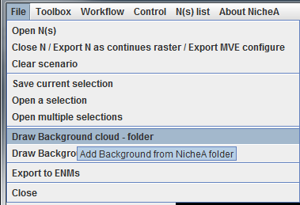
Figure 2. Select a folder which was generated by
"Principal Component Analysis" function to create BC in NicheA.
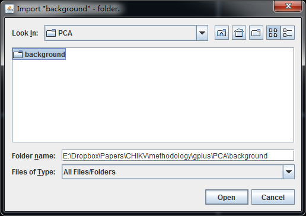
Figure 3. Drawing the BC.
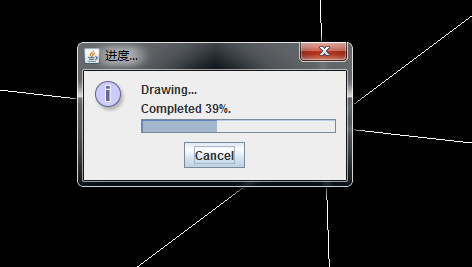
Figure 4.
A demo BC with the first three PCs generated by "Principal Component Analysis" function,
based on 19 Bioclimatic variables.
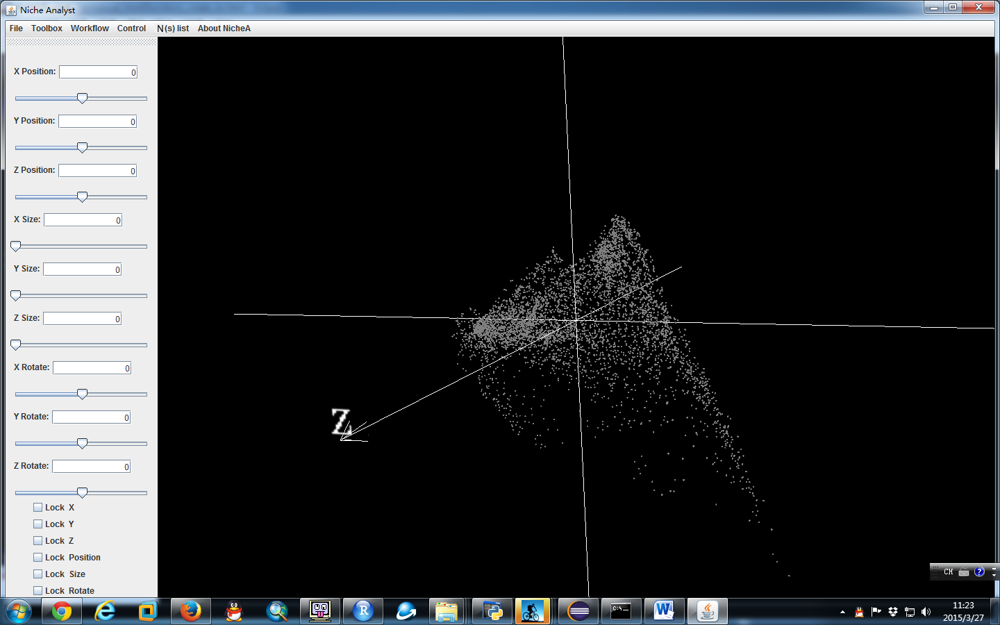
Figure 5. The menu to create BC from environmental variables directly.
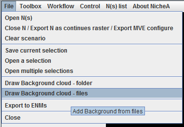
Figure 6. Create BC from multiply environmental variables.
The related functions in NicheA can handle multiply environmental variables (>3), but it can only show them in 3D space.
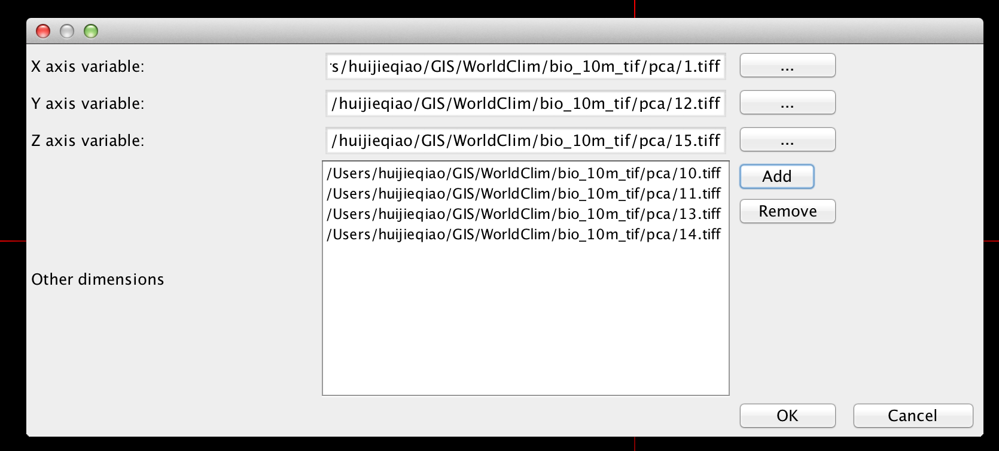
Figure 7. Create BC from two environmental variables in 2D space.
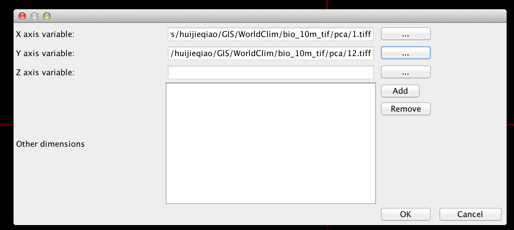
Note 1:
Because of the unit issue, some BCs are ugly and hard to read (Fig. 8). You can envoke the "Variable normalization/standardization" function to standardized the variables to make the diagram more beautiful, and easy to read and interpret (Fig. 9).
Figure 8. An ugly BC generated from two environmental variables.
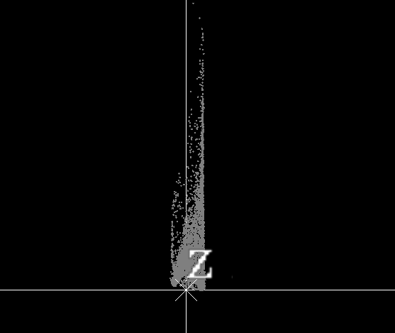
Figure 9.After envoking the "Variable normalization/standardization" function,
an easy-to-read BC was generated from two the same environmental variables as Fig. 8.
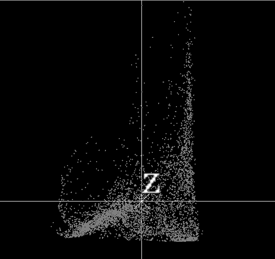
Note 2:
You need to clear the current scenario (BC and opened Ns) before you open a new BC. (Fig. 10 - 12)
Figure 10.
The prompt dialog form will appear when you try to draw a BC without clearing the original one.
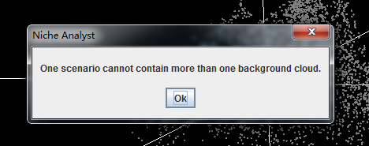
Figure 11.
The menu to clear the current scenario including BC and all the opened Ns.
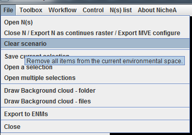
Figure 12.
After you click "Yes" button, you will get a clear scenario.
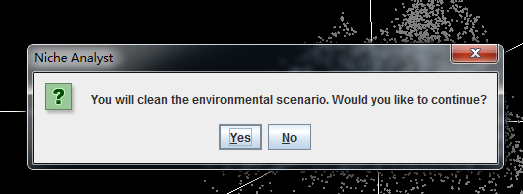
After you generate your first BC, you have the following options: